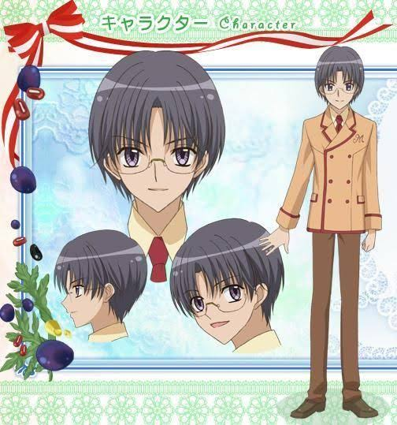

One of the "Sweets Princes" of St.Marie's Academy who specializes in chocolate. Andou is his childhood friend and Hanabusa is his roommate. Kashino is sometimes teased or misjudged due to his height, for he is the shortest of the Sweets Princes. He comes from a prestigious family of doctors who do not approve of his career choice. Due to a condition that his family gave him before attending St.Marie, he is forced to be always at the top of his class. Kashino is generally unsociable, straightforward, easily angered, and prickly. He greatly admires his uncle (who is a chocolatier), and he spent a lot of time in his shop when he was little (which inspired him to become a pâtissier). Even though he is initially judgemental and sarcastic due to Ichigo's klutzy personality, he warms up to her to the point of being teammates and friends, and later falls in love with her. In episode 34 it is shown that Kashino has a drawing of Ichigo in his notebook.In the second season, Kashino skipped a year in school because of his excellent grades during Team Ichigo's study abroad in Paris. He is now 16, but still conscious about his height, as Johnny regularly teases him for it. Whenever he sees Johnny holding Ichigo, he becomes visibly jealous
All texts are cited from Wikipedia
Visit Wikipedia
Inchigo Amano
 Image by Natsumi Matsumoto
Image by Natsumi Matsumoto
Makoto Kashino
 Image by Natsumi Matsumoto
Image by Natsumi Matsumoto
Satsuki Hanabusa
 Image by Natsumi Matsumoto
Image by Natsumi Matsumoto
Sennosuke Andou

Image by Natsumi Matsumoto